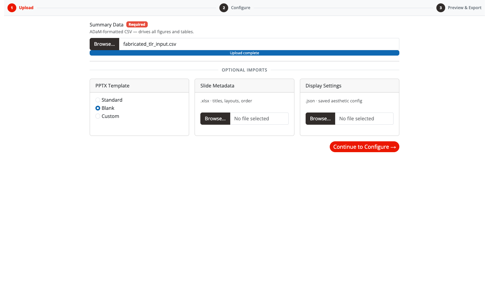
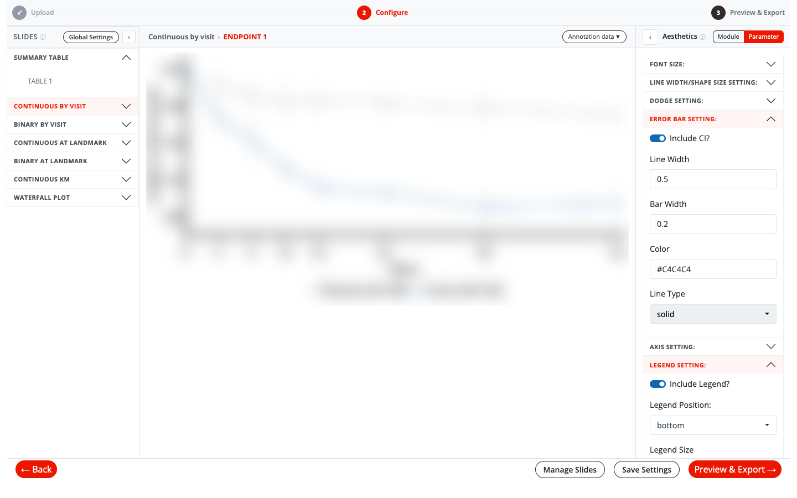
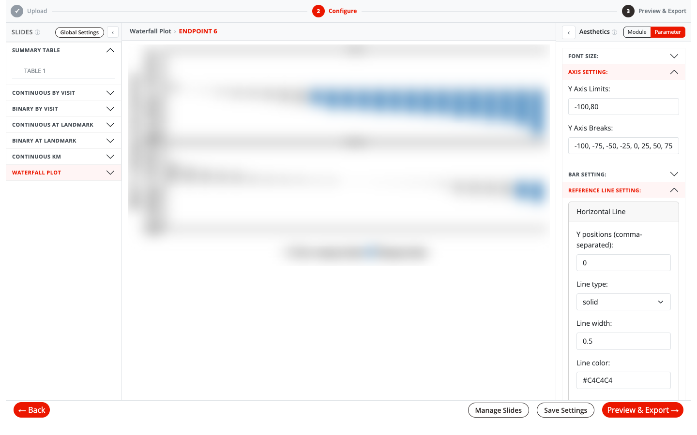
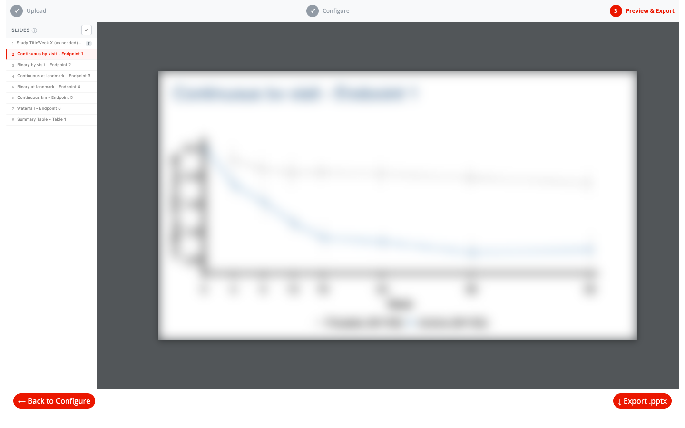

Report Slide Generator
A redesign of a pharma client’s tool that turns a prepared data file into a ready-to-edit topline report deck. The screenshots use invented data with the plots blurred, and the client’s name and logo are removed.
The problem
The client already had a working app that could export PowerPoint decks, but it was hard to find your way through, and you couldn’t see the slides until after you exported. You could watch each figure change while configuring it, but checking the finished deck meant exporting, opening the file, then going back into the app to fix anything and exporting again. The app needed a more intuitive flow and a way to review the deck without leaving it.
My role
The client’s team had built the original app and its figure code. I redesigned it: I reorganized and repurposed their code into a cleaner structure, aligned the app with the client’s brand, designed a new step-by-step workflow, and built the in-browser PowerPoint preview, which was the biggest piece of the project.
How it works
The app is three steps, Upload → Configure → Preview & Export, with a progress indicator that is always visible.




Designed for first-time users
Most people open a tool like this a few times a year, right before a deadline. So every screen explains itself, and nothing needs a manual:
- Info tooltips (ⓘ) on every panel explain what each area does, including the one concept new users trip over: setting a default for a whole plot type versus overriding a single plot.
- One toggle for defaults versus overrides. A Module / Parameter switch sets styles for every plot of a type at once or for just the plot on screen. Clicking a category or a single plot in the slide list switches levels automatically.
- A Manage Slides dialog for finishing touches in one place: filter the slide list, edit titles inline, include or exclude slides, combine several plots onto one slide (and split them apart again), and choose PNG, SVG or fully editable PowerPoint objects per slide.
- Global Settings in a popover: pick each treatment group’s color from a brand palette, once, for the whole deck.
- Save and reuse, now easy to find. The original app could already export display settings and import them on the next data refresh. I moved this into a Save Settings menu in the Configure footer, right where people finish styling, along with a pre-filled metadata template for setting slide order and titles in Excel.
- Clear feedback at every step, from progress messages while slides build to friendly guardrails like “Select at least 2 slides to combine,” so nothing fails silently.
What I did
- A live PowerPoint preview widget. This was the biggest piece. I built a custom htmlwidget so users see the real deck before they download it: officer builds the .pptx on the server and sends the file to the browser. There, the open-source JavaScript library pptx-renderer (
@aiden0z/pptx-renderer) draws each slide as HTML and SVG, and SortableJS lets users drag slides into a new order. The preview and the download use the same file, so they can’t drift apart, and users can review the deck, go back to adjust a slide and check it again without ever leaving the app. - A new UX flow. I replaced the original layout with a three-step workflow, Upload → Configure → Preview & Export, with a progress indicator and a consistent three-pane configure screen: slides on the left, the figure in the middle, and its settings on the right.
- Brand alignment. I brought the app’s colors, type and components in line with the client’s brand, so it feels like one of their own tools.
- A reorganized codebase. I repurposed the client’s existing figure code (eleven figure types plus summary tables) into a three-layer module design: a pure plotting function, a tab module that wires settings into it, and a dynamic layer that builds one tab per parameter in the upload. Axis, legend, error-bar and color controls became shared modules, with module-wide defaults that each parameter can override.